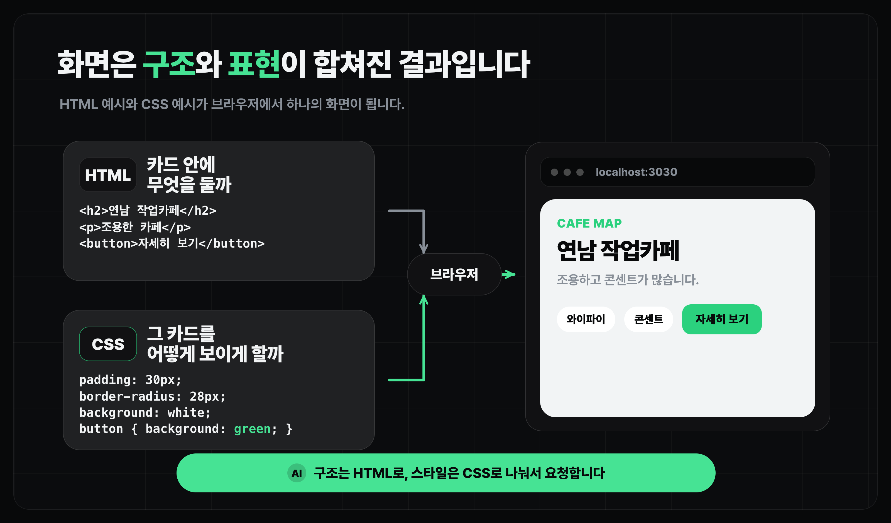
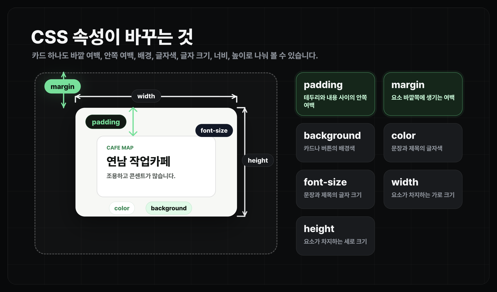

디자인 개선하기
Claude Code에게 디자인 수정 요청하기
화면을 가리키는 기본 용어와 Claude Code에게 디자인 피드백을 주는 방법을 봅니다.
얻어갈 것
- HTML/CSS가 디자인 수정에서 각각 어떤 역할을 하는지 구분합니다.
- Claude Code에게 자연어, 개발자 도구, 스크린샷으로 디자인 피드백을 주는 법을 봅니다.
디자인 피드백은 가리키는 말이 중요합니다
Claude Code에게 "화면을 더 예쁘게 해줘"라고만 말하면 원하는 디자인이 바로 나오지 않습니다.
- 어느 화면인지
- 어떤 UI 조각인지
- 무엇을 어떻게 바꾸고 싶은지
이 세 가지를 말해주면 수정 범위가 훨씬 선명해집니다. 화면을 가리키는 기본 단어를 알면 AI에게 피드백을 더 정확하게 줄 수 있습니다.
HTML/CSS 기본
- HTML은 화면에 무엇이 놓이는지 정합니다. 제목, 버튼, 입력창, 카드, 목록 같은 구조입니다.
- CSS는 그것이 어떻게 보이는지 정합니다. 색, 크기, 여백, 정렬, 모서리 둥글기 같은 표현입니다.

<section className="cafe-card">
<p className="eyebrow">CAFE MAP</p>
<h2>연남 작업카페</h2>
<p>조용하고 콘센트가 많습니다.</p>
<div className="tags">
<span>와이파이</span>
<span>콘센트</span>
</div>
<button>자세히 보기</button>
</section>
section: 하나의 카드나 영역을 감싸는 요소h2: 제목을 표현하는 요소p: paragraph(문단)를 표현하는 요소span: 짧은 라벨이나 작은 텍스트를 표현하는 요소button: 클릭할 수 있는 버튼을 표현하는 요소
CSS는 같은 구조를 어떤 분위기로 보여줄지 정합니다. 보통 HTML의 class나 React의 className으로 CSS를 연결합니다.
.cafe-card {
width: 320px;
height: 220px;
margin: 24px;
padding: 30px;
background: white;
color: #111827;
font-size: 16px;
border-radius: 28px;
}
.cafe-card button {
background: #34d399;
border-radius: 16px;
}
width: 카드의 가로 크기입니다.height: 카드의 세로 크기입니다.margin: 카드 바깥쪽 여백입니다.padding: 카드 안쪽 여백입니다.background: 카드나 버튼의 배경색입니다.color: 글자 색입니다.font-size: 글자 크기입니다.border-radius: 카드나 버튼의 모서리 둥글기입니다..cafe-card button: 카드 안에 있는 버튼만 골라 스타일을 바꾸는 선택자(Selector)입니다.

디자인 수정 때 자주 쓰는 UI 용어
디자인 피드백을 줄 때 UI 용어들을 미리 알고 있으면 더 수월하게 수정 요청을 할 수 있습니다.
사용자가 누르는 액션
요청 예시Button을 더 눈에 띄게 해줘.
하나의 정보 묶음을 담는 박스
요청 예시Card 안쪽 여백을 줄여줘.
짧은 텍스트를 입력하는 영역
요청 예시Input 높이를 조금 키워줘.
여러 줄 텍스트를 입력하는 영역
요청 예시Textarea의 줄 간격을 넓혀줘.
여러 옵션 중 하나를 고르는 메뉴
요청 예시Select가 너무 좁아 보이지 않게 해줘.
여러 항목을 동시에 선택하는 UI
요청 예시필터 조건을 Checkbox로 고르게 해줘.
여러 옵션 중 하나만 고르는 선택지
요청 예시정렬 기준을 RadioGroup으로 바꿔줘.
켜기/끄기를 전환하는 스위치
요청 예시알림 설정을 Switch로 켜고 끄게 해줘.
범위 안에서 값을 밀어서 조절하는 UI
요청 예시가격 필터를 Slider로 만들어줘.
한 화면 안에서 보기를 전환하는 UI
요청 예시Tabs의 선택된 상태를 더 분명하게 해줘.
확인, 입력, 경고를 위해 화면 위에 뜨는 창
요청 예시Dialog의 확인 Button을 오른쪽 아래에 둬.
버튼 주변에 뜨는 작은 패널
요청 예시필터 Button을 누르면 Popover가 열리게 해줘.
마우스를 올리면 뜨는 짧은 설명
요청 예시아이콘에 Tooltip을 붙여줘.
버튼을 눌렀을 때 아래로 열리는 메뉴
요청 예시정렬 옵션을 DropdownMenu로 보여줘.
상태나 분류를 작게 보여주는 라벨
요청 예시Badge 색을 더 차분하게 해줘.
사용자를 나타내는 동그란 프로필 이미지
요청 예시댓글 옆에 작성자 Avatar를 보여줘.
작업이 얼마나 진행됐는지 보여주는 막대
요청 예시업로드 중에 Progress를 보여줘.
데이터가 오기 전 임시로 보이는 회색 박스
요청 예시목록을 불러오는 동안 Skeleton을 보여줘.
저장 완료처럼 잠깐 떴다 사라지는 안내
요청 예시저장에 성공하면 Toast를 띄워줘.
제목을 누르면 내용이 접혔다 펼쳐지는 목록
네, 전화로 문의해 주세요.
요청 예시FAQ를 Accordion으로 정리해줘.
행과 열로 데이터를 정리한 표
| 카페 | 평점 |
|---|---|
| 연남 작업카페 | 4.8 |
| 성수 라운지 | 4.5 |
요청 예시저장 목록을 Table로 정리해줘.
현재 위치까지의 경로 표시
요청 예시상세 페이지 위에 Breadcrumb을 달아줘.
옆으로 넘겨 보는 카드 묶음
요청 예시후기 사진을 Carousel로 넘겨보게 해줘.
보여줄 데이터가 없을 때 안내하는 화면
요청 예시검색 결과가 없을 때 Empty 상태를 보여줘.
화면을 보면서 "Card 간격", "Dialog 안의 Button", "Popover 위치"처럼 부를 수 있으면 충분합니다.
더 많은 컴포넌트 이름과 실제 동작이 궁금하면 shadcn/ui Components 문서에서 컴포넌트별 예시를 확인해도 좋습니다.
디자인 피드백을 주는 세 가지 방법
자연어로 설명하기
가장 빠른 방법입니다. 화면 이름, 고칠 대상, 원하는 방향을 같이 말합니다.
카페 상세 화면 디자인을 다듬어줘. - 카드 사이 간격이 너무 넓어 보여서 조금 줄여줘. - 버튼은 더 눈에 띄게 만들되, 전체 색감은 지금보다 튀지 않게 해줘. - 모바일에서도 텍스트가 버튼 밖으로 넘치지 않게 확인해줘.
개발자 도구로 찍어서 말하기
브라우저 개발자 도구에서 요소를 선택하면 어떤 HTML 조각, 컴포넌트, class가 문제인지 더 정확히 말할 수 있습니다.
- 개발자 도구 열기: Windows는
F12또는Ctrl + Shift + I, Mac은Cmd + Option + I를 누릅니다. - 화면에서 요소 찍기: Windows는
Ctrl + Shift + C, Mac은Cmd + Shift + C를 누른 뒤 고치고 싶은 부분을 클릭합니다. - 선택된 HTML, class 이름, 컴포넌트 이름 중 보이는 것을 Claude Code에게 알려줍니다.
[복사한 HTML 태그] 위 카드를 기준으로 - padding을 조금 줄여줘. - 제목과 본문 사이 간격도 줄여줘. - 수정 후 데스크톱과 모바일에서 레이아웃이 깨지지 않는지 확인해줘.
스크린샷으로 보여주기
말로 설명하기 어려운 시각 문제는 스크린샷이 가장 빠릅니다.
- 문제 화면을 캡처해서 올립니다.
- 가능하면 고치고 싶은 부분을 표시합니다.
- "이 부분의 여백", "이 버튼의 대비", "이 카드의 정렬"처럼 캡처 안에서 대상을 콕 집습니다.
첨부한 스크린샷을 기준으로 디자인을 수정해줘. @스크린샷 이미지 - 빨간색으로 표시한 영역의 여백이 너무 커 보여. - 파란색으로 표시한 버튼은 클릭 가능한 요소처럼 더 분명하게 보여야 해.
마무리
- 디자인 수정 요청은 "어느 화면의 어떤 UI를 어떻게 바꿀지"를 말하는 작업입니다.
- 자연어, 개발자 도구, 스크린샷을 같이 쓰면 Claude Code가 수정 위치와 의도를 더 잘 잡습니다.
- 다음 레슨에서는 이 감각을 바탕으로 디자인 시스템과 토큰이라는 기준을 봅니다.